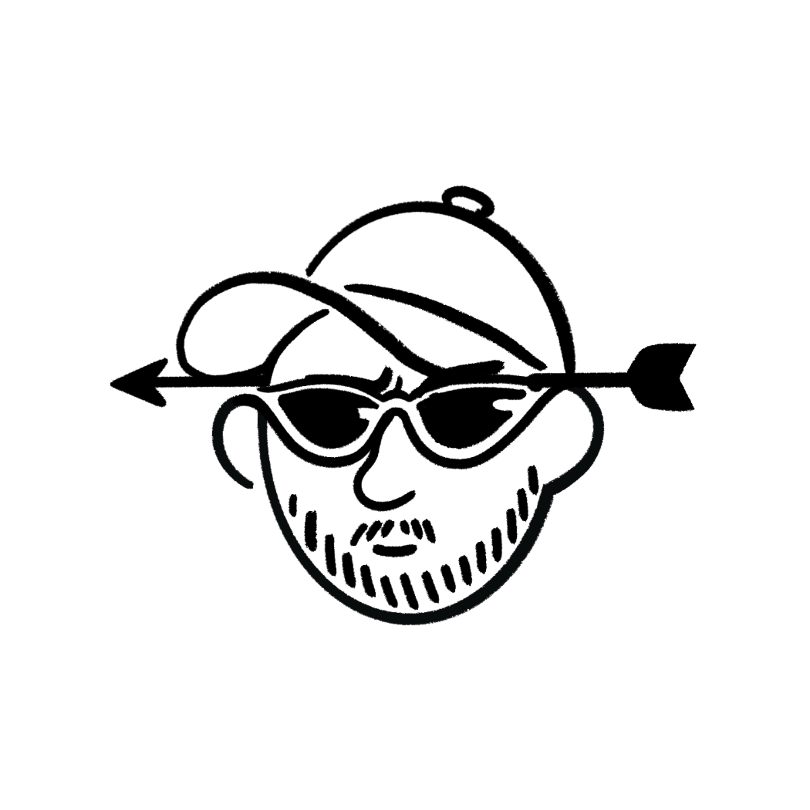

성명윤기훈
학력국립한밭대학교 기계공학과 3학년 재학
연락처010-9484-2454
이메일20237058@edu.hanbat.ac.kr
전공 프로젝트
이차전지를 이용한 발명품 프로젝트
이차전지 응용 아이디어를 구체화하여 프로토타입·보고서 기반으로 본선 진출 및 입상
학기 프로젝트 · 팀원 6명
3D 디지털 제조 과목 프로젝트
디지털 제조 공정 학습과 팀 협업으로 제품 설계·제작, 중간·최종 발표 수행
학기 프로젝트 · 팀원 6명
About Me
저는 기계공학과 전공 지식을 바탕으로 생산 및 설비 관리 분야에 관심을 두고 있으며, 약 2년간의 현장 근무 경험과 다양한 자격증을 통해 실무 적응력과 문제 해결 능력을 보유하고 있습니다. 교내외 프로젝트와 공모전에서 팀장으로서 경험을 쌓으며 리더십과 협업 능력을 키웠고, 이러한 경험을 기반으로 조직과 함께 성장하는 엔지니어를 목표로 합니다.
1. 학력 사항 (Education)
- 국립한밭대학교 (대전)
- 학과: 기계공학과
- 학년: 3학년 (재학 중)
- 전공 강점: 설계 프로그램(2D AutoCAD, 3D Inventor, CATIA 등) 모델링
- 목표: 4학년 캡스톤 디자인 프로젝트로 대회 입상
2. 교내 활동 / 학회 경험
- 봉사 동아리 조장 – 팀을 이끌며 운영 및 조직 관리 경험 습득
- 후배 멘토링 – 취업 관련 조언 및 고민 상담 진행
- 팀 프로젝트 갈등 해결 경험 – 이차 전지 관련 대회 준비 과정에서 참여 의지가 부족한 팀원들을 정리하고, 참여 의지가 있는 팀원을 중심으로 팀을 재구성하여 프로젝트 성공적으로 진행
3. 대외 활동 / 공모전
- 이차 전지를 활용한 발명품 대회 – 입상
- 역할: 팀장 (팀원 관리, 보고서 작성, 최종 발표 담당)
- 성과: 창의적인 아이디어로 입상 달성
- 연계성: 관리직 진출 시 필요한 리더십과 발표 능력 함양
- 이차 전지를 활용한 창업 아이템 대회 – 입상
- 역할: 팀장 (팀원 관리, 보고서 작성, 최종 발표 담당)
- 성과: 창의적인 아이디어로 입상 달성
- 연계성: 관리직 진출 시 필요한 리더십과 발표 능력 함양
4. 인턴십 / 현장 경험
- 생산직 오퍼레이터 근무 (약 2년)
- 주요 업무: 공정 관리, 기계 정비, 신규 직원 교육
- 성과:
- 초반 1년간 부사수로 경험 축적
- 이후 1년간 사수로서 부사수 교육 담당
- 진로 연계: 생산·설비 관리 직무 수행 시 현장 경험을 바탕으로 빠른 적응 가능
- 암벽 등반 안전 요원 근무 (약 1년)
- 주요 업무: 안전 장비(하네스, 안전모 등) 관리, 장비 착용 안내 및 시범
- 성과: 체험 학생들에게 안전한 교육과 긍정적 경험 제공
- 진로 연계: 강인한 체력과 안전 의식으로 안전 관리직과의 높은 연관성
5. 보유 역량 / 자격증
자격증
- 설비보전산업기사
- 전기기능사
- 3D 프린터 운용기능사
- 컴퓨터활용능력 2급
- 지게차운전기능사
- 굴착기운전기능사
- 천장크레인운전기능사
- 로더운전기능사
전문 스킬 및 강점
- CAD/3D 설계 및 디지털 제조 기술
- 공정 관리 및 설비 유지보수 능력
- 실무 현장 경험 기반의 빠른 적응력
6. 전공 프로젝트 경험
- 이차전지를 이용한 발명품 프로젝트 (팀원 6명, 1학기 진행)
- 역할: 팀장 (총괄 기획 및 보고서 작성, 최종 발표 담당)
- 성과:
- 보고서를 통해 1차 예선 심사 통과
- 본선에서 직접 최종 발표를 통해 입상
- 배운 점: 리더십 역량 강화, 협업 능력 및 문제 해결 능력 향상
- 3D 디지털 제조 과목 프로젝트 (팀원 6명, 1학기 진행)
- 역할: 팀장 (총괄 기획, 최종 발표 담당)
- 성과: 1차 중간 발표 성공적으로 수행, 최종 발표 준비 중 (부족한 부분 보완)
- 배운 점: 리더십 역량 강화, 협업 능력 및 문제 해결 능력 향상